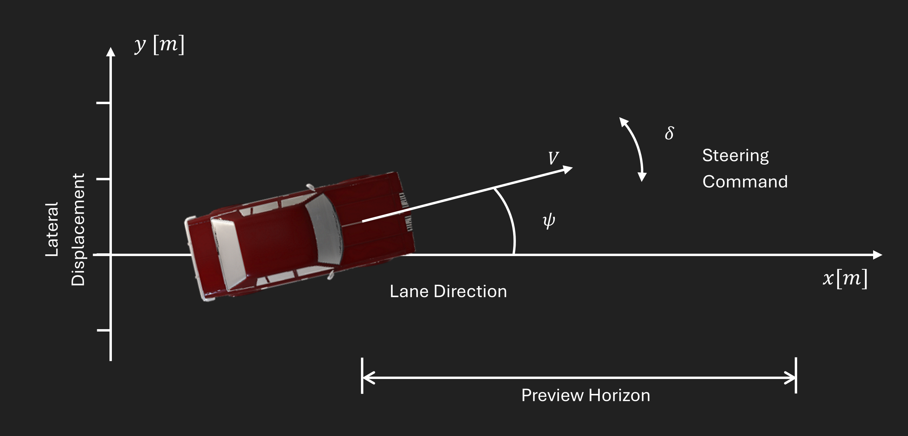
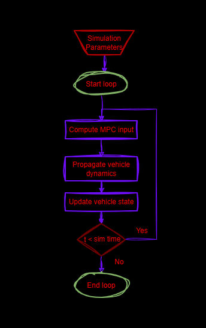
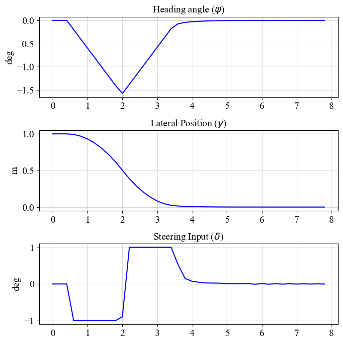
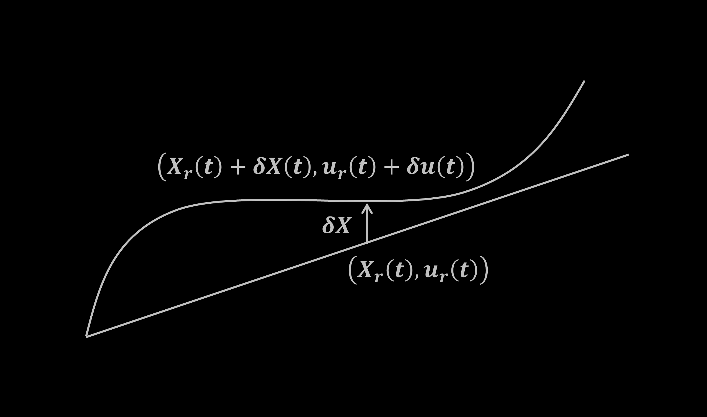

← Click to open in Google Colab
← Click to open in Google ColabTo download this notebook, click the download icon in the toolbar above and select the .ipynb format.
For any questions or comments, please open an issue on the c4dynamics issues page.
Vehicle Steering - Model Predictive Control#
The notebook implements a Model Predictive Controller (\(MPC\)) for vehicle steering. Using a simplified model to track a straight reference line, it solves a constrained finite-horizon quadratic program at each time step with scipy.optimize.minimze, while simulating the closed-loop vehicle dynamics using c4dynamics.

Figure 1: Lane diagram: The steering command controls the vehicle in the lateral direction (\(y\)). The \(MPC\) algorithm optimizes the cost over a finite horizon in the forward (preview) direction.
Author#
This notebook was developed by Gilmar Tuta (@grep265) as part of the c4dynamics project, under the guidance of the c4dynamics maintainers.
1. System Model#
[1].where:
\(y\): lateral position \([m]\)
\(\psi\): heading angle \([rad]\)
\(V\): vehicle velocity \([m/s]\)
\(\delta\): steering input \([rad/s]\)
Since the perturbation in \(x\) is identically zero for a straight reference aligned with the \(x\)-axis, the \(x\)-state can be omitted from the perturbation dynamics without loss of information.
Control Objective#
In this case, the primary goal is to follow a straight line at a constant velocity. The steering input \(\delta\) is used to regulate the lateral position \(\psi\) and the heading angle \(y\). For straight-line tracking, the desired lateral position and heading angle are both zero. In this example, we assume ideal measurements (i.e., zero noise) and focus mainly on the MPC logic. In practical applications, various sensors (e.g., IMU, GPS, wheel encoders) and/or a Kalman filter would be used to measure or estimate the lateral position and heading angle.
Setup and Parameters#
Import required packages
[ ]:
import sys
# Check if Google Colab is running:
if "google.colab" in sys.modules:
!pip install c4dynamics
[1]:
import numpy as np
import c4dynamics as c4d
import matplotlib.pyplot as plt
from scipy.integrate import solve_ivp
from scipy.optimize import minimize
Define vehicle speed, initial states, simulation step, and duration.
[2]:
V = 22.3 # vehicle speed [m/s]
Define initial states
[3]:
psi0 = 0 # initial heading angle [rad]
y0 = 1 # initial lateral position [m]
Define simulation step and duration
[4]:
dt = 0.2 # time step [s]
t_end = 8 # simulation end time [s]
Vehicle Model Function#
[5]:
def vehicle_model(t, x, delta, V=V):
psi, y = x
return [delta, V * psi]
Initialize Vehicle State#
Use c4dynamics.state to define and store the vehicle states during simulation:
[6]:
vehicle = c4d.state(psi=psi0, y=y0)
Add steering input as a vehicle parameter:
[7]:
vehicle.delta = 0
2. Model Predictive Controller (MPC)#
The vehicle steering is controlled using a Model Predictive Controller. An \(MPC\) algorith is composed by 3 core elements [2]:
Prediction Model: A mathematical representation of the system (typically discrete-time) used to predict future system behavior over a defined prediction horizon \(N\). It enables the controller to anticipate how current actions affect future states.Cost Function: A scalar function that quantifies desired performance, typically penalizing tracking error and control effort. The \(MPC\) algorithm minimizes this function subject to constraints.Control Law: Unlike traditional controllers with fixed gain formulas (e.g., \(PID\)), \(MPC\) computes the control law by solving a constrained optimization problem in real-time. The solver generates an optimal sequence of future control inputs, but only the first input is applied to the plant. This receding-horizon process repeats at each time step.
\(MPC\) is suitable for vehicle steering because it simultaneously addresses constraints, prediction, and optimization within a single control problem. Steering rate limits and actuator bounds can be enforced explicitly as constraints, ensuring physically feasible control actions. Unlike \(PID\) controllers, which react only to tracking errors, \(MPC\) optimizes a cost function over the prediction horizon, preventing the vehicle from entering unrecoverable states. This yields to smoother control actions and improved tracking performance, especially in constrained or highly dynamic scenarios.
For this case, the \(MPC\) computes the optimal steering input \(\delta\) over a finite prediction horizon to regulate both the lateral position \(y\) and heading angle \(\psi\) of the vehicle.
2.1 Prediction Model#
In a continuous system, motion is described by differential equations (\(dx/dt\)). The continuous-time kinematic model is:
Computers and optimization solvers can’t process a continuous “flow” of time. They require individual snapshots to do the math (discretization). Therefore, we break the motion into fixed time steps \(dt\). This allows to predict the next state \(x_{k+1}\) based on the current state \(x_k\) and the control inputs \(u_k\). The discrete model can be expressed as: \(x_{k+1} = A \cdot x_k + B \cdot u_k\) [3]. For this example the timestep is \(dt = 0.2 s\):
This linear approximation allows the \(MPC\) to “look ahead” into the future for a set number of steps (the horizon) to see where the car will end up before it actually moves.
[8]:
A = np.array([
[1.0, 0.0],
[V * dt, 1.0]
])
B = np.array([
[dt],
[0.5 * V * dt**2]
])
Steering Input Constraint:
To ensure the simulation reflects real-world physics, we apply a hard constraint on the steering rate:
This constraint represents the actuator limitation (specifically the steering rate limit). In a real vehicle, the steering actuation cannot change the wheel angle instantaneously. Limiting the rate of change prevents the controller from requesting commands beyond the actuator capabilities:
[ ]:
delta_max = 1 * c4d.d2r # max steering rate [1deg/sec converted to rad/sec]
2.2. Cost Function#
As stated earlier, the \(MPC\) minimizes a finite-horizon cost function subject to constraints.
The quadratic cost function penalizes state deviations through \(Q\) and control effort through \(R\):
Subject to the Prediction Model and the steering constraint:
The term \(x_N^T Q x_N\) represents the terminal cost and is crucial for guaranteeing closed-loop stability and enabling optimization over a finite horizon.
Optimization Method#
scipy.optimize.minimize with the SLSQP (Sequential Least Squares Programming) algorithm.Structure#
The optimizer takes:
1 objective function:
cost: quadratic penalty on states and control inputs over the prediction horizon.
3 constraints functions:
initial_state: enforces \(X[:,0] = vehicle.X\).
dynamics: enforces the discrete-time linear model.
control_bounds: enforces \(|\delta_k| <= \delta_{max}\).
Parameters#
N: prediction horizon
Q: state weighting
R: input weighting
[10]:
N = 20 # prediction horizon
Q = np.diag([150.0, 1.0]) # weight on state variables [psi, y]
R = np.array([[1.0]]) # weight on input command [delta]
The cost function and the respective constraints are defined in the following snippet:
[ ]:
def cost(z):
"""
cost function to minimize:
X[N]'*Q*X[N] + sum[ X[k]'*Q*X[k] + u[k]'*R*u[k] ]
"""
X = z[:2*(N+1)].reshape(2, N+1)
u = z[2*(N+1):].reshape(1, N)
cost = 0
for k in range(N):
cost += X[:, k] @ Q @ X[:, k]
cost += u[:, k] @ R @ u[:, k]
cost += X[:, N] @ Q @ X[:, N]
return cost
[ ]:
def initial_state(z):
"""
initial state constraints:
X[:, 0] = vehicle.X
"""
X = z[:2*(N+1)].reshape(2, N+1)
return X[:, 0] - vehicle.X
[ ]:
def dynamics(z):
'''
system dynamics:
X[:, k+1] = A @ X[:, k] + B @ u[:, k]
'''
X = z[:2*(N+1)].reshape(2, N+1)
u = z[2*(N+1):].reshape(1, N)
constraints = []
for k in range(N):
error = X[:, k+1] - (A @ X[:, k] + B @ u[:, k])
constraints.extend(error)
return np.array(constraints)
[ ]:
def control_bounds(z):
'''
input control limits:
|u[:, k]| <= delta_max
'''
u = z[2*(N+1):].reshape(1, N)
return delta_max - np.abs(u).flatten()
[ ]:
constraints = [
{'type': 'eq', 'fun': initial_state},
{'type': 'eq', 'fun': dynamics},
{'type': 'ineq', 'fun': control_bounds}
]
2.3. Control Law#
3. Simulation#
The simulation workflow is illustrated below:

Figure 2: Simulation loop.
At each time step:
Store state and parameters
Measure current state and solve \(MPC\) for optimal steering input
Apply the input and propagate the vehicle dynamics using
solve_ivpUpdate and state
The control input is delayed by two time steps to allow the system to initialize smoothly and ensure reliable state measurements before closed-loop control is applied.
[12]:
for ti in np.arange(0, t_end, dt):
vehicle.store(ti)
vehicle.storeparams('delta', t=ti)
if ti >= 2 * dt:
# Initial guess for optimization
z0 = np.zeros(2*(N+1) + N)
z0[:2*(N+1)] = np.tile(vehicle.X[:, np.newaxis], N+1).flatten()
# solve the quadratic program once per step
result = minimize(cost, z0, method='SLSQP',
constraints=constraints,
options={'ftol': 1e-6, 'maxiter': 100}
)
# Extract first control input
vehicle.delta = result.x[2*(N+1):].reshape(1, N)[0, 0]
sol = solve_ivp(vehicle_model, [ti, ti + dt], vehicle.X, args=(vehicle.delta,))
vehicle.X = sol.y[:, -1]
4. Results#
Lateral position \(y\): moves from the initial offset toward zero.
Heading angle \(\psi\): adjusts transiently to correct lateral error.
Steering input \(\delta\): applies a bounded corrective action and settles near zero once stabilized.
[ ]:
fig, axs = plt.subplots(3, 1, figsize=(7, 7))
plt.subplots_adjust(right=0.8)
# 1. Heading Angle (psi) in degrees
axs[0].plot(*vehicle.data('psi', scale=c4d.r2d), color='blue', linewidth=1.5)
c4d.plotdefaults(axs[0], 'Heading angle ($\\psi$)', '', 'deg', fontsize = 14)
# 2. Lateral Position (y) in meters
axs[1].plot(*vehicle.data('y'), color='blue', linewidth=1.5)
c4d.plotdefaults(axs[1], 'Lateral Position ($y$)', '', 'm', fontsize = 14)
# 3. Steering Input (delta) in degrees
axs[2].plot(*vehicle.data('delta', scale=c4d.r2d), color='blue', linewidth=1.5)
c4d.plotdefaults(axs[2], 'Steering Input ($\\delta$)', '', 'deg', fontsize = 14)
plt.tight_layout()

These results highlight key \(MPC\) characteristics:
The controller predicts future vehicle states and optimizes control actions accordingly.
Constraints on steering input are enforced through the optimization problem.
The receding horizon strategy ensures robustness to small modeling errors and disturbances by continuously updating the solution based on the current state.
5. Conclusions#
This guide demonstrates the implementation of an \(MPC\) for vehicle steering using a kinematic model. The controller was able to track a straight reference path while producing smooth and bounded steering commands.
By using a mathematical model of the vehicle, the controller predicts future states over a horizon and computes a sequence of steering actions that keep the vehicle on track in an optimal way. Unlike simpler controllers, \(MPC\) accounts for physical limitations, such as maximum steering input, ensuring that all control actions remain feasible. By balancing multiple goals, like following a straight path while minimizing passenger discomfort (jerk), it achieves a sophisticated, human-like driving behavior.
Possible extensions of this work include:
Using a more detailed vehicle model that captures tire forces, lateral slip, and dynamic effects
Extending the controller to handle steering and longitudinal speed control simultaneously
Introducing a state observer to estimate unmeasured variables for feedback control
Implementing a nonlinear \(MPC\) formulation for more complex scenarions, such as higher speeds or more aggressive maneuvers
Replacing the analytical model with a neural network to develop a Neural \(MPC\) controller
References#
Appendix#
Complete Linearization of a Planar Kinematic Model#
In System Model we presented the final form of the linear simplified representation of the system.
The steps for a formal linearization:
Write the nonlinear model
Choose an operating point
Define perturbation variables
Compute Jacobians
Expand first-order Taylor series
Form the linear state-space model
Validate the linearization
In this appendix we go step by step to linearize the planar kinematic of a vehicle about a straight-line reference trajectory.
1. Nonlinear Continuous-Time Model#
Precise nonlinear equations:
where:
\(x\): longitudinal position [m]
\(y\): lateral position [m]
\(V\): vehicle velocity [m/s]
\(ψ\): heading angle [rad]
\(u\): steering input [rad/s]
State vector:
To linearize the system we have to define a reference trajectory, or operating point, about which the system is approximated.
2. Reference Trajectory (Operating Point)#
We linearize the system about a straight-line motion with constant heading (\(\psi_r\)) and zero control input.
The corresponding reference trajectory \(X_r\) is:
Time Derivative of the Reference Trajectory#
Differentiation of the reference trajectory gives:
Consistency Check#
Substituting \((\mathbf{X}_r, u_r)\) into the nonlinear model gives:
The complete trajectory is therefore a construction of a straight line and a deviations part.
Deviations from this reference trajectory can now be approximated by the linear parts of a Taylor series.
3. Perturbation Variables#
Define deviations \(\delta{X}, \delta{u}\) from the reference trajectory:
With time derivative:
These nonlinear deviations can be approximated by the first-order terms with in the Taylor expansion with respect to the state and the input deviations.

4. First-Order Taylor Expansion#
Let:
A first-order Taylor expansion about \((X_r, u_r)\) yields (higher order terms are neglected):
$$
$$
Since
the perturbation dynamics are
Where:
\(\Delta \dot{X} \approx \delta \dot{X}\)
\(A = \left.\frac{\partial f}{\partial X}\right|_{r}\)
\(B = \left.\frac{\partial f}{\partial u}\right|_{r}\)
5. Jacobian Computation#
\(A\) and \(B\) are given by the Jacobians, i.e., the partial derivatives of \(f\) with respect to the state \(X\) and with respect to the input \(u\).
Jacobian with Respect to the State#
Partial derivatives:
$$
$$
Thus
Jacobian with Respect to the Input#
6. Linearized Continuous-Time System#
Substitution of the coefficients of \(A\) and \(B\) into the equation representation of the system:
At first order, position deviations are caused only by heading perturbations. Velocity components aligned with the reference trajectory affect position only through higher-order terms.
The tangent component (along the reference velocity) contributes only at second order, so it does not appear in the linearized \((\delta x, \delta y)\) equations.
The term \(-V \cdot \sin\psi_r\) is the \(x\)-component of the normal component of the velocity deviation.
The term \(V \cdot \cos\psi_r\) is the \(y\)-component of the normal component of the velocity deviation.
Define:
Then:
This is the final linearized form of the a planar kinematic of a vehicle about a straight-line reference trajectory.
Notation Modification#
From this point onward, we redefine the perturbation variables \((\Delta{x} \rightarrow x,\Delta{y} \rightarrow y,\Delta{\psi} \rightarrow \psi)\) as the system state for notational simplicity. Or simply:
7. Zero-Heading Reference Simplification#
Now, let’s assume the reference trajectory is parallel to the \(x\) axis, i.e. \(\psi_r = 0\).
The linear model simplifies to:
That is:
Under this assumption the perturbation dynamics is as follows:
No motion in \(x\) (\(\dot{x} = 0\))
The velocity in \(y\) is simply the velocity angle (\(\psi\)) scaled by the velocity magnitude (\(V\))
Since the perturbation in \(x\) is identically zero for a straight reference aligned with the \(x\)-axis, the \(x\)-state can be omitted from the perturbation dynamics without loss of information:
Where \(X_r\) is the reference dynamics:
And \(\Delta{X}\) is the solution of the linearized dynamics.
8. Discrete-Time Linear Model#
Let’s discretize the reference model and linearized model using forward Euler discretization with time-step (\(dt\)):
Discrete-Time Linearized Model#
For input \(u\).
Discrete-Time Reference Model#
Where the reference input corresponds to constant forward velocity.
9. Example#
[ ]:
import numpy as np
import matplotlib.pyplot as plt
import c4dynamics as c4d
# Parameters
V = 10.0 # [m/s]
dt = 0.01 # [s]
T = 5.0 # [s]
N = int(T / dt)
# Small steering input (heading rate)
def u(t):
return 0.2 * np.sin(0.5 * t)
# Nonlinear system
nln_sys = c4d.state(x = 0.0, y = 0.0, psi = 0.0)
# Reference trajectory
ref_sys = c4d.state(x = 0.0, y = 0.0, psi = 0.0)
# Linearized model
lin_sys = c4d.state(y = 0.0, psi = 0.0)
[ ]:
for k in range(N - 1):
t = k * dt
nln_sys.store(t)
ref_sys.store(t)
lin_sys.store(t)
# nonlinear system
nln_sys.X += [V * np.cos(nln_sys.psi) * dt,
V * np.sin(nln_sys.psi) * dt,
u(t) * dt]
# reference system
ref_sys.X += [V * dt, 0, 0]
# linear system
lin_sys.X += [V * lin_sys.psi * dt,
u(t) * dt]
[ ]:
# Reconstruct full state
x_rec = ref_sys.data('x')[1]
y_rec = ref_sys.data('y')[1] + lin_sys.data('y')[1]
# Plot
plt.figure(figsize = (8, 5))
plt.plot(nln_sys.data('x')[1], nln_sys.data('y')[1], label = "Nonlinear model", linewidth = 2)
plt.plot(x_rec, y_rec, "--", label = "Reference + Linearized", linewidth=2)
plt.xlabel("x [m]")
plt.ylabel("y [m]")
plt.title("Nonlinear vs Reference + Linearized Reconstruction")
plt.legend()
plt.grid(True)
plt.axis("equal")
plt.tight_layout()
plt.show()